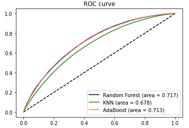

Perfomance

There is clear difference between the performance using the Random Forest or AdaBoost models rather than KNN. Both
Random Forest and AdaBoost classifiers perform at about the same rate.
Model: Random Forest
This model results in AUC of 0.717 and a 5 fold CV accuracy of 79.4%.
Model: KNN
This model results in AUC of 0.678 and a 5 fold CV accuracy of 77.9%.
Model: AdaBoost
This model results in AUC of 0.713 and a 5 fold CV accuracy of 78.0%.